We just launched Claude Ship which can review your pull requests, work on fixes and approve the ones your team's policy allows. You may have a custom skill or workflow for these steps, but we wanted to offer an alternative. This guide walks through them based on my experience on the Claude Code team.
When you open a pull request, there's usually a bunch of follow-up work to be done:
- CI fails
- A review comes back with six comments
- A main merge creates a conflict
They're all tiny little tasks, but each one takes you off your focus work.
On our team an agent commonly does this follow-up work. For example, it can pick up an issue a reviewer found, so when the author gets back, the PR has already been updated once.
In my experience this is a more productive and enjoyable way to code. It minimizes context switching and keeps me in a flow state.
We've talked about the process the Claude Code team uses for code review here, and about the verification process underneath it here.
我们刚刚发布了 Claude Ship，它可以审查你的 pull request，着手修复，并在团队政策允许的范围内批准变更。你也许已经有自定义的 skill 或工作流来做这些事，但我们想再提供一个选择。这份指南会根据我在 Claude Code 团队的经验，把这些步骤走一遍。
你开出一个 PR 之后，通常还跟着一堆收尾工作：
- CI 挂了
- 审查回来六条评论
- 有人往 main 合并，制造了一个冲突
每件都不大，但每一件都会把你从正在专注的工作里拉开。
在我们团队，这类收尾工作常常交给一个 agent。比如，它可以先接住审查者指出的问题，等作者回来时，PR 已经被更新过一轮。
以我的经验，这样写代码更高效，也更愉快。它减少了上下文切换，让我保持在心流里。

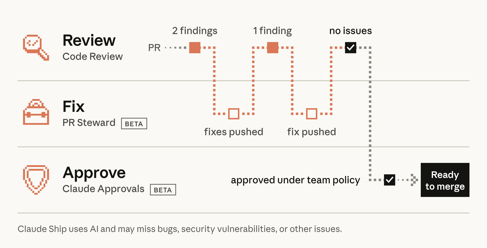
图中文字 · 中文翻译
Claude Ship 的三条路径
PR 出现 2 findings，随后变为 1 finding，最后 no issues（没有问题）
两次 fixes pushed / fix pushed（已推送修复）
approved under team policy（按团队政策获得批准）→ Ready to merge（可以合并）
图注：Claude Ship uses AI and may miss bugs, security vulnerabilities, or other issues.（Claude Ship 使用 AI，可能漏掉 bug、安全漏洞或其他问题。）
图中文字 · 中文翻译
Claude Ship 的三条路径
PR 出现 2 findings，随后变为 1 finding，最后 no issues（没有问题）
两次 fixes pushed / fix pushed（已推送修复）
approved under team policy（按团队政策获得批准）→ Ready to merge（可以合并）
图注：Claude Ship uses AI and may miss bugs, security vulnerabilities, or other issues.（Claude Ship 使用 AI，可能漏掉 bug、安全漏洞或其他问题。）
Claude Ship is for a developer or tech lead whose team works on GitHub and who doesn't have admin privileges. You can start on your own right now by running a few commands, and save what you learn to files in your repo for the team to review. Admins only need to get involved if your team wants agents doing this automatically on the team's PRs.
You're still the architect of the process, so you're defining what to build, how to build it, and what the bar for merging is.

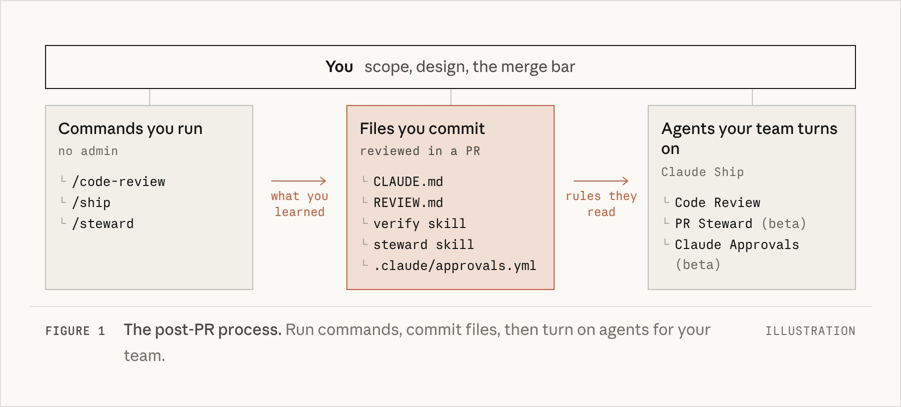
图中文字 · 中文翻译
FIGURE 1 · PR 提交之后的流程
你负责：scope、design，以及合并的标准（the merge bar）。
/code-review、/ship、/stewardCLAUDE.md、REVIEW.md、verify skill、steward skill、
.claude/approvals.ymlClaude Ship：Code Review、PR Steward（beta）、Claude Approvals（beta）
图注：The post-PR process. Run commands, commit files, then turn on agents for your team.（PR 提交之后的流程。先运行命令，再提交文件，然后为团队开启 agent。）
Claude Ship 面向的是开发者或技术负责人：团队在 GitHub 上工作，而你本人没有管理员权限。你现在就可以先自己跑几条命令开始用，再把学到的东西写成仓库里的文件，交给团队审阅。只有当团队希望这些 agent 自动处理团队的 PR 时，才需要管理员介入。
你仍然是这套流程的设计者，所以要由你来定义做什么、怎么做，以及合并的标准是什么。
图中文字 · 中文翻译
FIGURE 1 · PR 提交之后的流程
你负责：scope、design，以及合并的标准（the merge bar）。
/code-review、/ship、/stewardCLAUDE.md、REVIEW.md、verify skill、steward skill、
.claude/approvals.ymlClaude Ship：Code Review、PR Steward（beta）、Claude Approvals（beta）
图注：The post-PR process. Run commands, commit files, then turn on agents for your team.（PR 提交之后的流程。先运行命令，再提交文件，然后为团队开启 agent。）
After you've opened a PR, you want to find issues, address issues, and make a final decision on if the change can be merged.
Claude Ship is three agents that tackle this work: Code Review, PR Steward (beta), and Claude Approvals (beta).
Code Review does an in-depth review of pull requests against the codebase through multiple lenses. It collects findings, adversarially verifies them, categorizes them and posts them to a PR.

图中文字 · 中文翻译
Code Review 在 PR 上的发现示例
文件 src/api/retry.ts 的 diff 给 fetchWithRetry 增加了 Retry-After 等待逻辑。
重试可能会打回一个已经在限流的服务器。
Retry-After 可以是 HTTP 日期（这时 wait 会变成 NaN），也可以缺失（这时会变成 0）。无论哪种情况，sleep(wait) 都会立刻返回。修复：解析该标头的两种形式，在没有可用值时回退到指数退避。Number("Wed, 18 Nov 2026 07:28:00 GMT") 是 NaN，Number(null) 是 0。sleep 把该值交给 setTimeout，两者都会被当成无延迟，于是直到 maxRetries 的每次尝试都会在毫秒内发出。Verification：
src/api/sleep.ts:3 调用 setTimeout(resolve, ms) 时没有防护，且没有任何 fetchWithRetry 的调用方自己加延迟。Finding ID：f-3c91a7e2
开出 PR 之后，你要做的是：找出问题、处理问题，并最终决定这次变更能不能合并。
Claude Ship 是三个共同承接这项工作的 agent：Code Review、PR Steward（beta）和 Claude Approvals（beta）。
Code Review 会从多个视角，对照代码库对 PR 做深入审查。它收集发现、对抗式地核验这些发现、归类，再把结果贴到 PR 上。
图中文字 · 中文翻译
Code Review 在 PR 上的发现示例
文件 src/api/retry.ts 的 diff 给 fetchWithRetry 增加了 Retry-After 等待逻辑。
重试可能会打回一个已经在限流的服务器。
Retry-After 可以是 HTTP 日期（这时 wait 会变成 NaN），也可以缺失（这时会变成 0）。无论哪种情况，sleep(wait) 都会立刻返回。修复：解析该标头的两种形式，在没有可用值时回退到指数退避。Number("Wed, 18 Nov 2026 07:28:00 GMT") 是 NaN，Number(null) 是 0。sleep 把该值交给 setTimeout，两者都会被当成无延迟，于是直到 maxRetries 的每次尝试都会在毫秒内发出。Verification：
src/api/sleep.ts:3 调用 setTimeout(resolve, ms) 时没有防护，且没有任何 fetchWithRetry 的调用方自己加延迟。Finding ID：f-3c91a7e2
PR Steward works to keep a PR green, but is designed not to approve or merge pull requests. It jumps in on failing CI checks, merge conflicts and review feedback from Code Review, other review tools, or team members. After every push, it comments with what it changed and how to undo it.

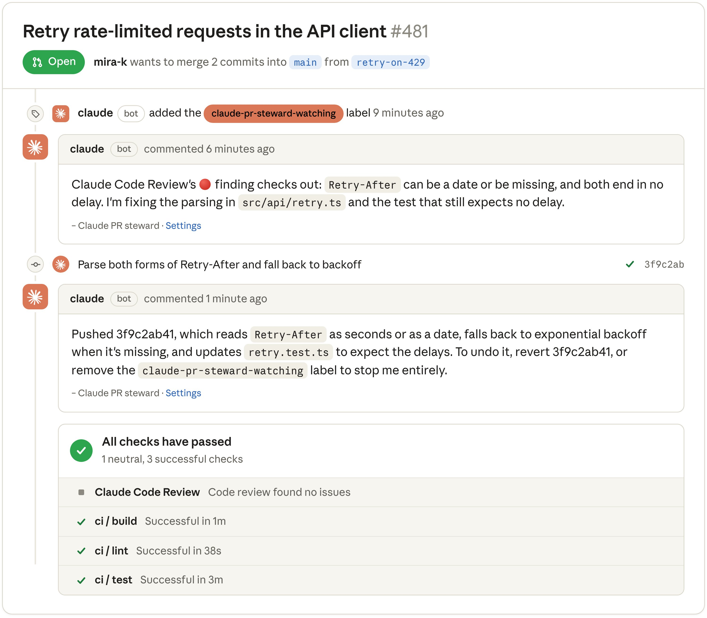
图中文字 · 中文翻译
PR Steward 跟进同一条发现
PR 标题：Retry rate-limited requests in the API client #481（在 API 客户端中重试被限流的请求）。作者 mira-k 希望把 2 个 commit 从 retry-on-429 合并进 main。
claude-pr-steward-watching 标签。Claude Code Review 的发现成立：
Retry-After 可以是日期，也可以缺失，两种情况都以无延迟结束。我正在修复 src/api/retry.ts 里的解析，以及仍然假定无延迟的测试。署名：Claude PR steward
已推送 3f9c2ab41：把
Retry-After 按秒或日期读取，缺失时回退到指数退避，并更新 retry.test.ts 以期待这些延迟。要撤回，请 revert 3f9c2ab41，或去掉 claude-pr-steward-watching 标签来彻底停止我。Claude Code Review：未发现问题；ci/build、ci/lint、ci/test 均成功。
PR Steward 的工作是让 PR 保持绿灯，但它被设计成不批准、不合并 PR。它会接手失败的 CI、合并冲突，以及来自 Code Review、其他审查工具或团队成员的反馈。每次推送之后，它都会评论自己改了什么、以及怎么撤回。
图中文字 · 中文翻译
PR Steward 跟进同一条发现
PR 标题：Retry rate-limited requests in the API client #481（在 API 客户端中重试被限流的请求）。作者 mira-k 希望把 2 个 commit 从 retry-on-429 合并进 main。
claude-pr-steward-watching 标签。Claude Code Review 的发现成立：
Retry-After 可以是日期，也可以缺失，两种情况都以无延迟结束。我正在修复 src/api/retry.ts 里的解析，以及仍然假定无延迟的测试。署名：Claude PR steward
已推送 3f9c2ab41：把
Retry-After 按秒或日期读取，缺失时回退到指数退避，并更新 retry.test.ts 以期待这些延迟。要撤回，请 revert 3f9c2ab41，或去掉 claude-pr-steward-watching 标签来彻底停止我。Claude Code Review：未发现问题；ci/build、ci/lint、ci/test 均成功。
From there, Claude Approvals applies an approval policy that the team writes as a file in the repository. Claude can approve routine changes on its own if the policy allows it, or can require deeper human sign-off for certain scenarios. It works like a smarter CODEOWNERS file. Teams can have Claude Approvals consider a variety of signals in its decision-making process, including Code Review findings or their own classifiers.

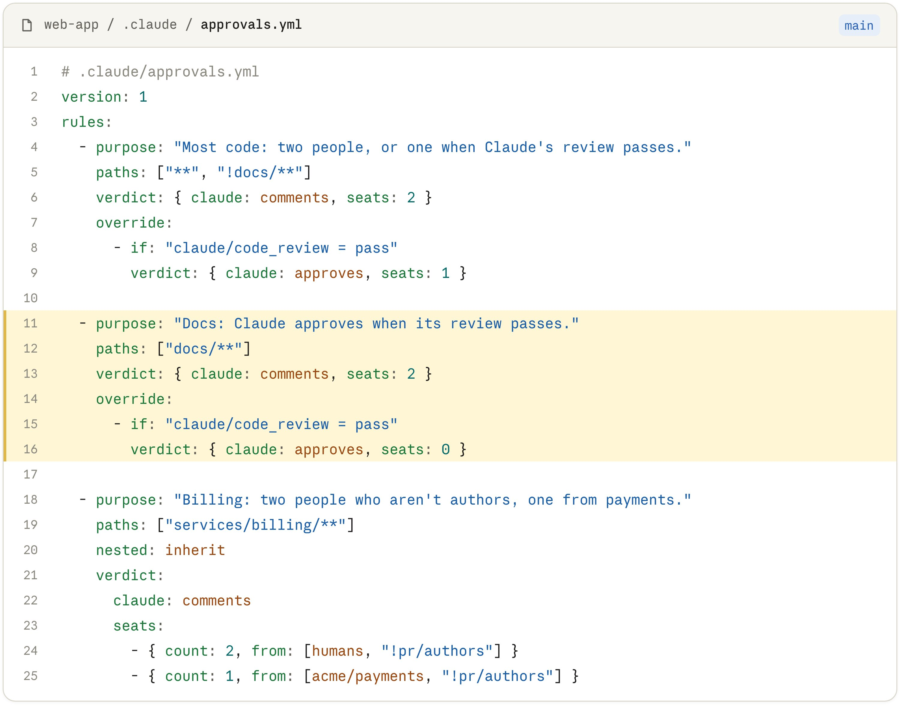
图中文字 · 中文翻译
仓库中的 .claude/approvals.yml 示例
purpose：大多数代码需要两个人；当 Claude 的审查通过时，一个人即可。
purpose：文档。当 Claude 的审查通过时，由 Claude 批准（seats 为 0）。
purpose：计费。需要两个不是作者的人，其中一人来自 payments。使用
nested: inherit，并从 humans / acme/payments 中排除 !pr/authors。接下来，Claude Approvals 会应用团队写在仓库文件里的批准政策。如果政策允许，Claude 可以自行批准常规变更；在某些情形下，也可以要求更深入的人工签字。它的作用类似于一份更聪明的 CODEOWNERS 文件。团队可以让 Claude Approvals 在决策时参考多种信号，包括 Code Review 的发现，或团队自己的 classifier。
图中文字 · 中文翻译
仓库中的 .claude/approvals.yml 示例
purpose：大多数代码需要两个人；当 Claude 的审查通过时，一个人即可。
purpose：文档。当 Claude 的审查通过时，由 Claude 批准（seats 为 0）。
purpose：计费。需要两个不是作者的人，其中一人来自 payments。使用
nested: inherit，并从 humans / acme/payments 中排除 !pr/authors。Code Review is generally available, and the other two are in beta. /ship is a command you run yourself in Claude Code to try Claude Ship on your own pull requests. It comes with the latest version of Claude Code, and it works even before an admin has turned on any of the agents.
You can partially automate the first two steps today. The last step is a decision that you set in your branch protections and (if your team adopts one) your policy file. Here is how it breaks down using the three agents that are part of Claude Ship:

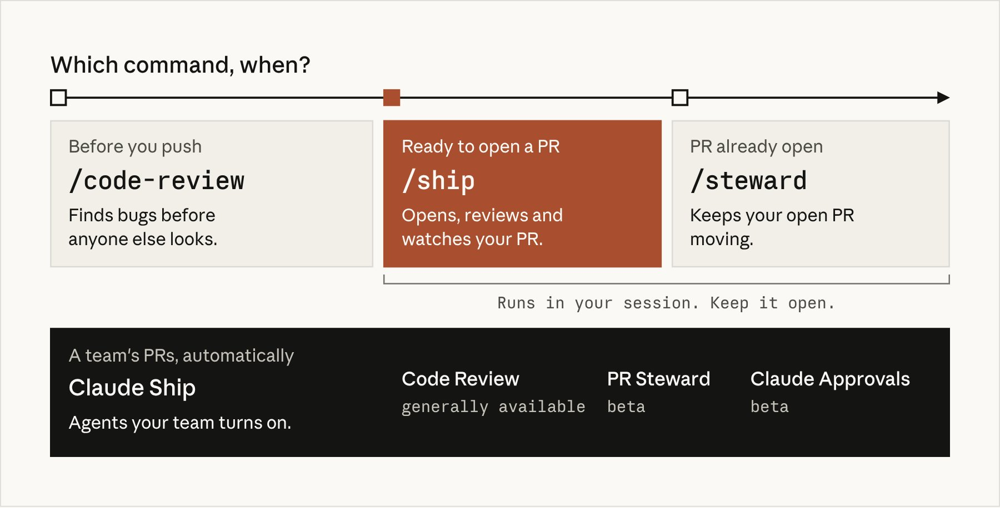
图中文字 · 中文翻译
Which command, when? · 什么时候用哪条命令？
/code-review在其他人看到之前先找出 bug。
/ship打开、审查并值守你的 PR。
/steward让已开出的 PR 继续向前走。
下方说明：Runs in your session. Keep it open.（在你的 session 里运行。保持它开启。）
A team's PRs, automatically.（自动处理团队的 PR。）Agents your team turns on.（由团队开启的 agent。）Code Review 已正式可用；PR Steward、Claude Approvals 为 beta。

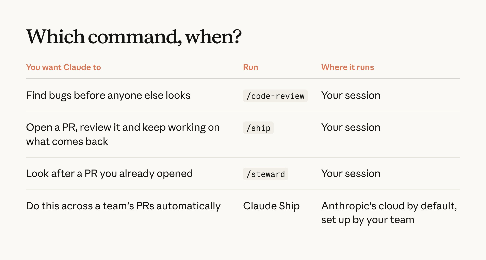
图中文字 · 中文翻译
Which command, when? · 什么时候用哪条命令？
列：You want Claude to（你希望 Claude 做的事）／Run（运行）／Where it runs（在哪里运行）
/code-review → Your session（你的 session）/ship → Your session/steward → Your sessionCode Review 已经正式可用，另外两个还在 beta。/ship 是你在 Claude Code 里自己运行的命令，用来在自己的 PR 上试用 Claude Ship。它随最新版 Claude Code 提供，即使管理员还没有开启任何 agent，它也能用。
前两步你今天就可以部分自动化。最后一步是一个决定，写在分支保护规则里，以及（如果团队采用了的话）政策文件里。用 Claude Ship 包含的三个 agent 来看，分工如下：
图中文字 · 中文翻译
Which command, when? · 什么时候用哪条命令？
/code-review在其他人看到之前先找出 bug。
/ship打开、审查并值守你的 PR。
/steward让已开出的 PR 继续向前走。
下方说明：Runs in your session. Keep it open.（在你的 session 里运行。保持它开启。）
A team's PRs, automatically.（自动处理团队的 PR。）Agents your team turns on.（由团队开启的 agent。）Code Review 已正式可用；PR Steward、Claude Approvals 为 beta。
图中文字 · 中文翻译
Which command, when? · 什么时候用哪条命令？
列：You want Claude to（你希望 Claude 做的事）／Run（运行）／Where it runs（在哪里运行）
/code-review → Your session（你的 session）/ship → Your session/steward → Your sessionGetting started today with /code-review
If you only do one thing from this post, review your branch before you push it. Any bugs you catch at this point are less likely to come back later as review comments or failed checks that pull you off of your next task. At the Claude Code prompt, enter this command:
/code-reviewIt reviews the commits on your branch and your uncommitted changes for correctness bugs. A few variations to keep in mind:
/code-review high 1234 # review PR 1234 at high effort
/code-review --fix # apply the findings to your working tree
/code-review --comment 1234 # post the findings on the PR
/code-review ultra # run a deeper review in the cloudThe effort range goes from low to max, with low returning only the findings the review is most sure about and higher levels giving you a broader set (including some it's less sure about). The command remembers your last effort, so enter a new one if the risk level changes.
A few caveats:
- You will want to take extra care when using the ultra setting, which runs in the cloud, needs a login at claude.ai, and can be billed separately from your plan. Read the ultrareview docs before trying it.
- Edits made by --fix during a background review may not be caught by /rewind. Commit first if you want an easy way back.
- Local /code-review reads your CLAUDE.md files, but not REVIEW.md. This matters later.
The first thing you should do is run /code-review a few times to understand what it catches and where it gets things wrong. You'll use this later.
今天就开始用 /code-review
如果这篇文章你只做一件事，请在推送之前先审查自己的分支。这一步抓到的 bug，后面就不太会再以审查评论或失败检查的形式出现，把你从下一件事里拉开。在 Claude Code 的提示符下输入这条命令：
/code-review它会审查你分支上的 commit，以及尚未提交的变更，寻找正确性方面的 bug。下面几个变体值得记住：
/code-review high 1234 # review PR 1234 at high effort
/code-review --fix # apply the findings to your working tree
/code-review --comment 1234 # post the findings on the PR
/code-review ultra # run a deeper review in the cloudeffort 的范围从 low 到 max。low 只返回审查最有把握的发现，更高等级会给出更广的一组（其中也包括把握没那么大的）。这条命令会记住你上次用的 effort，如果风险变了，请重新指定一档。
几点要注意：
- 使用 ultra 档时要格外小心：它在云端运行，需要登录 claude.ai，费用可能与你的套餐分开计算。试用前请先阅读 ultrareview 文档。
- 后台审查期间由
--fix做出的修改，不一定能被/rewind捕获。如果想轻松回到原状，请先 commit。 - 本地的
/code-review会读你的 CLAUDE.md 文件，但不会读 REVIEW.md。这一点后面会用到。
你首先应该做的，是多跑几次 /code-review，弄清楚它能抓住什么、又会在哪里弄错。这些观察后面会用到。
Run /ship for your next PR
Once you're ready, type:
/shipIf you don't have a PR for your branch yet, /ship will:
- Commit your pending changes. It behaves as if you had run
git add -A, so it will respect your.gitignore. It will create a branch if necessary, and it will use your session to write the commit message. You will be notified of this before the commit, and can abort by hitting Esc. - Push and create the PR as you.
- Perform a code review using /code-review, unless the commit has already been reviewed by Code Review. If the code review reports any issues, it will fix the ones it judges as valid for you.
- Watch the PR for up to seven days. It will work on failing checks, conflicts, and review comments, and will exit if the PR is merged or closed.
The first step, where /ship commits your pending changes as if you had run git add -A, sometimes catches people by surprise, so be sure to run git status before running /ship.
The command will not commit changes that touch files with names that look like secrets, or files that set rules, like CLAUDE.md, REVIEW.md, or anything in the .claude/ or .github/ directories. You will need to make these commits manually beforehand.
Also, if you are working in a public repository, the command will not commit any changes for you. You will need to commit any pending changes manually before you can proceed, and if the PR already exists, it won't include your pending changes.
下一次 PR 时运行 /ship
准备好了就输入：
/ship如果你的分支还没有对应的 PR，/ship 会：
- 提交你尚未提交的变更。行为相当于你运行了
git add -A，因此会尊重.gitignore。必要时它会创建分支，并用当前 session 来写 commit message。提交前会通知你，按 Esc 可以中止。 - 以你的身份推送并创建 PR。
- 用
/code-review做一次代码审查，除非这次 commit 已经被 Code Review 审查过。如果审查报告了问题，它会为你修复那些它判断为有效的问题。 - 最多值守这个 PR 七天。它会处理失败的检查、冲突和审查评论；PR 被合并或关闭后，它会退出。
第一步——/ship 会像执行了 git add -A 一样提交未提交的变更——有时会让人措手不及，所以运行 /ship 之前一定要先看 git status。
这条命令不会提交：文件名看起来像密钥的变更，以及制定规则的文件，比如 CLAUDE.md、REVIEW.md，或 .claude/、.github/ 目录下的任何内容。这些需要你事先手动提交。
此外，如果你在公共仓库里工作，这条命令不会替你提交任何变更。你需要先手动提交未提交的变更才能继续；如果 PR 已经存在，它也不会把你未提交的变更加进去。
Optional: specifying effort level, PR, or bot
/ship high # run at high effort
/ship 41 # work on pull request #41
/ship +my-lint-bot # also read comments from my-lint-bot
/ship stop # end the watchThe command will by default read comments by you, people with write access, and the Claude GitHub App. You can specify additional bots in the form +name. If that bot comments, it will be treated as an assertion to check against the code.

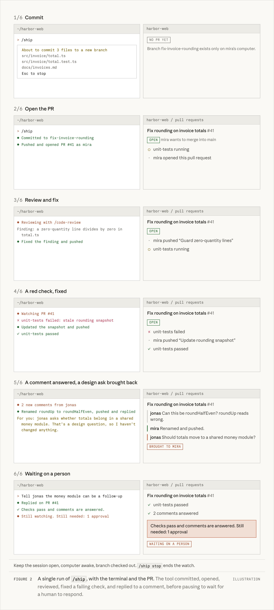
图中文字 · 中文翻译
FIGURE 2 · 一次 /ship 的完整运行，左侧是终端，右侧是 PR
即将把 3 个文件提交到一个新分支。Esc 可停止。右侧：尚无 PR。分支
fix-invoice-rounding 只存在于 mira 的电脑上。已提交到该分支，并以 mira 的身份推送并打开 PR #41。右侧：Fix rounding on invoice totals #41，unit-tests 正在运行。
正在用
/code-review 审查。发现：数量为零的行会在 total.ts 里除以零。已修复该发现并推送。右侧：mira 推送了 “Guard zero-quantity lines”。正在值守 PR #41。unit-tests 失败：过期的 rounding snapshot。已更新 snapshot 并推送，随后 unit-tests 通过。
jonas 的两条新评论。已将 roundup 重命名为 roundHalfEven，推送并回复。jonas 问 totals 是否应放到共享的 money 模块里——这是一个设计问题，所以没有改。该问题被标记为 BROUGHT TO MIRA（交给 mira）。
告诉 jonas，money 模块可以后续再做。检查已通过，评论已回复。仍在值守。还缺 1 个批准。状态：WAITING ON A PERSON。
请保持 session 开启、电脑不休眠、分支处于检出状态。/ship stop 会结束值守。
图注：工具完成了提交、打开、审查、修复失败的检查、回复评论，然后停下来等人回应。
可选：指定 effort、PR 或 bot
/ship high # run at high effort
/ship 41 # work on pull request #41
/ship +my-lint-bot # also read comments from my-lint-bot
/ship stop # end the watch默认情况下，这条命令会阅读你本人、具有写权限的人，以及 Claude GitHub App 的评论。你可以用 +name 的形式指定额外的 bot。如果那个 bot 发表了评论，它会被当作一条需要对照代码核验的断言。
图中文字 · 中文翻译
FIGURE 2 · 一次 /ship 的完整运行，左侧是终端，右侧是 PR
即将把 3 个文件提交到一个新分支。Esc 可停止。右侧：尚无 PR。分支
fix-invoice-rounding 只存在于 mira 的电脑上。已提交到该分支，并以 mira 的身份推送并打开 PR #41。右侧：Fix rounding on invoice totals #41，unit-tests 正在运行。
正在用
/code-review 审查。发现：数量为零的行会在 total.ts 里除以零。已修复该发现并推送。右侧：mira 推送了 “Guard zero-quantity lines”。正在值守 PR #41。unit-tests 失败：过期的 rounding snapshot。已更新 snapshot 并推送，随后 unit-tests 通过。
jonas 的两条新评论。已将 roundup 重命名为 roundHalfEven，推送并回复。jonas 问 totals 是否应放到共享的 money 模块里——这是一个设计问题，所以没有改。该问题被标记为 BROUGHT TO MIRA（交给 mira）。
告诉 jonas，money 模块可以后续再做。检查已通过，评论已回复。仍在值守。还缺 1 个批准。状态：WAITING ON A PERSON。
请保持 session 开启、电脑不休眠、分支处于检出状态。/ship stop 会结束值守。
图注：工具完成了提交、打开、审查、修复失败的检查、回复评论，然后停下来等人回应。
Letting Claude watch the PR
Claude watches the PR as you, on your machine, and uses your quota. Closing your laptop stops it, so keep the session open and the machine awake. You'll also need to be logged in to the GitHub CLI (run gh auth login first), and it only watches a PR that you opened.
For anything other than auto mode, the watch stops at every prompt and requires your response. It won't watch in bypass-permissions mode. Note that on Windows, /ship opens the PR and reviews, but the watch doesn't start.
Ensure that the watch has its own checkout. You need to leave the branch checked out. If you're just going to jump straight into your next task, then make sure to use a separate worktree for one of them.
If the watch fails to start, Claude will explain why but still review the PR. For example, you can't run a watch if you have a PreToolUse or PermissionRequest hook on Bash in the .claude/settings.json of your repo.
Additionally, the watch uses up model turns while you're away, so it counts against your plan usage or API bill. The first time you use it, it's a good idea to be near your machine to make sure usage is within your expectations.
让 Claude 值守这个 PR
Claude 会以你的身份、在你的机器上值守这个 PR，并占用你的配额。合上笔记本它就会停，所以请保持 session 开启、机器不休眠。你还需要已登录 GitHub CLI（先运行 gh auth login），而且它只会值守由你开出的 PR。
除了 auto 模式 以外，值守会在每个提示处停下来，等你回应。它不会在 bypass-permissions 模式下值守。注意：在 Windows 上，/ship 会打开 PR 并做审查，但值守不会启动。
请确保值守有自己的 checkout。你需要保持该分支处于检出状态。如果你马上要开始下一件事，请给其中一边单独准备一个 worktree。
如果值守没能启动，Claude 会说明原因，但仍会审查这个 PR。例如，如果你的仓库在 .claude/settings.json 里为 Bash 设置了 PreToolUse 或 PermissionRequest hook，就无法启动值守。
另外，值守在你不在时也会消耗 model turn，因此会计入套餐用量或 API 账单。第一次使用时，最好人在机器旁边，确认用量符合预期。
Only run the watch on repos you trust
The watch will merge the base branch into yours when necessary and then run commands like your tests. In other words, anyone who has the ability to land changes on the base branch has the ability to run commands on your machine during the watch. Only run the watch locally on a repo where you trust everyone who can land changes on the base branch.
Claude is told never to merge the PR, and Claude Code also constrains the gh and git commands it can run during an unattended turn, preventing direct merging or force-pushing. The watch's own commits also leave out the files that set the rules: .github/, CODEOWNERS, CLAUDE.md, .claude/, git hooks, etc.
However, this doesn't protect against all vectors. For example, the test script also runs under your credentials, and if you type a message during a turn, that will allow the constraints to be lifted for that turn. Additionally, if auto-merge is enabled, a fix from the watch could end up being what allows GitHub to merge.
Furthermore, the commits and pushes made by Claude during the watch are not affected by git hooks in your repo, so make sure any checks that need to be present are added to CI and branch rules.
For the full terms of the watch, run /ship terms in the product before your first time using it.
只在你信任的仓库上运行值守
必要时，值守会把基线分支合并进你的分支，然后运行测试之类的命令。换句话说，任何有权把变更合入基线分支的人，都有能力在值守期间在你的机器上运行命令。请只在这样的仓库本地运行值守：你信任每一个能把变更合入基线分支的人。
Claude 被要求绝不合并 PR，Claude Code 也会限制它在无人值守的 turn 里可运行的 gh 和 git 命令，防止直接合并或 force-push。值守自己产生的 commit 也会排除那些制定规则的文件：.github/、CODEOWNERS、CLAUDE.md、.claude/、git hooks 等等。
不过，这并不能防住所有途径。例如，测试脚本同样会在你的凭据下运行；如果你在某个 turn 中输入了一条消息，该 turn 的限制就会被解除。此外，如果启用了 auto-merge，值守提交的一次修复，最终可能正好让 GitHub 完成合并。
再者，Claude 在值守期间所做的 commit 和推送，不受仓库里 git hooks 的影响，所以任何必须存在的检查，都应当加到 CI 和分支规则中。
完整的值守条款，请在第一次使用前，在产品里运行 /ship terms 查看。
/steward for existing PRs
Many PRs don't need another review, but need someone to see them through to merge. If you have such a PR, check out the branch and run:
/steward 41It will run just the watch component of /ship. It will watch the PR you opened and work on things like failing checks, conflicts, and comments, without reviewing it first.
If you don't specify a PR number, it will watch the PR for the current branch. It will take the same +name bots, and the same caveats as before apply.
However, if a PR is already labeled Steward, it will not run the local watch. And if it is unable to run a watch, /steward will not do anything.
If you want to stop the watch, you can use either /steward stop or /ship stop. Since a session can only run one watch at a time, starting a new one will terminate the previous one.
Don't confuse /steward with PR Steward, which is a team service that runs as claude[bot] after being enabled by an admin. The /steward command runs as you, in your session.
A PR that has red checks is a good place to start. A PR that gets stuck in a conflict loop is also a good candidate. On the flip side, a PR that's in the middle of a design debate is a bad one because that's your debate to settle.
对已有 PR 使用 /steward
许多 PR 并不需要再审查一轮，但需要有人把它们送到合并。如果你有这样的 PR，检出该分支并运行：
/steward 41它只会运行 /ship 的值守部分。它会值守你开出的 PR，处理失败的检查、冲突和评论，而不会先做审查。
如果不指定 PR 号，它会值守当前分支对应的 PR。它同样接受 +name 形式的 bot，前面的注意事项同样适用。
不过，如果一个 PR 已经被打上 Steward 标签，它就不会启动本地值守。如果无法启动值守，/steward 什么也不会做。
想结束值守，可以用 /steward stop 或 /ship stop。一个 session 同时只能运行一个值守，启动新的会终止上一个。
不要把 /steward 和 PR Steward 搞混。后者是管理员开启后、以 claude[bot] 身份运行的团队服务。/steward 命令是以你的身份、在你的 session 里运行的。
检查已经变红的 PR，是一个合适的起点。陷入冲突循环的 PR 也适合。反过来，正处在设计争论中的 PR 就不合适，因为那场争论该由你来了结。
Claude escalates bigger calls to you
As part of the watch, Claude is told to make small changes and elevate the bigger ones. Things like:
- A request to redesign something, like a new API or a bigger scope
- A security issue it wasn't able to resolve
It also pushes at most 3 times for a given issue, and then reports the attempted solutions.
That's roughly equivalent to our claim in the verification blog post: if we keep running the same check and it keeps failing after three rounds, then the approach is probably wrong.
At this point, it escalates to the author of the code.

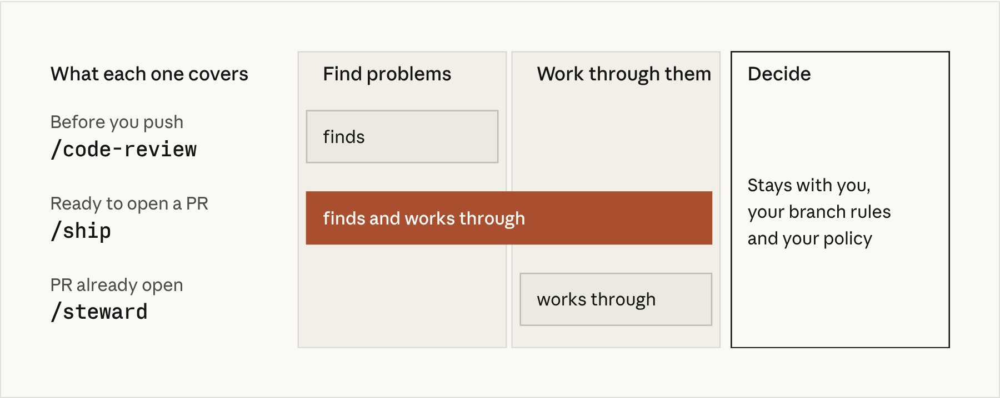
图中文字 · 中文翻译
What each one covers · 各自覆盖什么
推送之前用 /code-review；准备开 PR 时用 /ship；PR 已经开出时用 /steward。
/code-review：finds（找）。/ship：finds and works through（找，并着手处理）。/ship：finds and works through。/steward：works through（处理）。仍然在你手里，由你的分支规则和你的政策决定。
Claude 会把更大的决定交给你
作为值守的一部分，Claude 被要求做小的改动，并把更大的问题升级给你。比如：
- 要求重新设计某样东西，比如一套新 API，或更大的范围
- 它未能解决的安全问题
对同一个问题，它最多推送 3 次，然后汇报尝试过的方案。
这大致相当于我们在验证流程那篇博客里的说法：如果同一个检查连续跑、连续三轮都失败，那说明做法大概不对。
到了这一步，它会升级给代码的作者。
图中文字 · 中文翻译
What each one covers · 各自覆盖什么
推送之前用 /code-review；准备开 PR 时用 /ship；PR 已经开出时用 /steward。
/code-review：finds（找）。/ship：finds and works through（找，并着手处理）。/ship：finds and works through。/steward：works through（处理）。仍然在你手里，由你的分支规则和你的政策决定。
As you get a few PRs under your belt, you'll start to notice patterns. For instance:
- The same comment from the same reviewer
- A setup instruction that Claude has to figure out
- A flaky check
You can start to write these down for your team, in one of a few files, depending on which tool needs to read it:

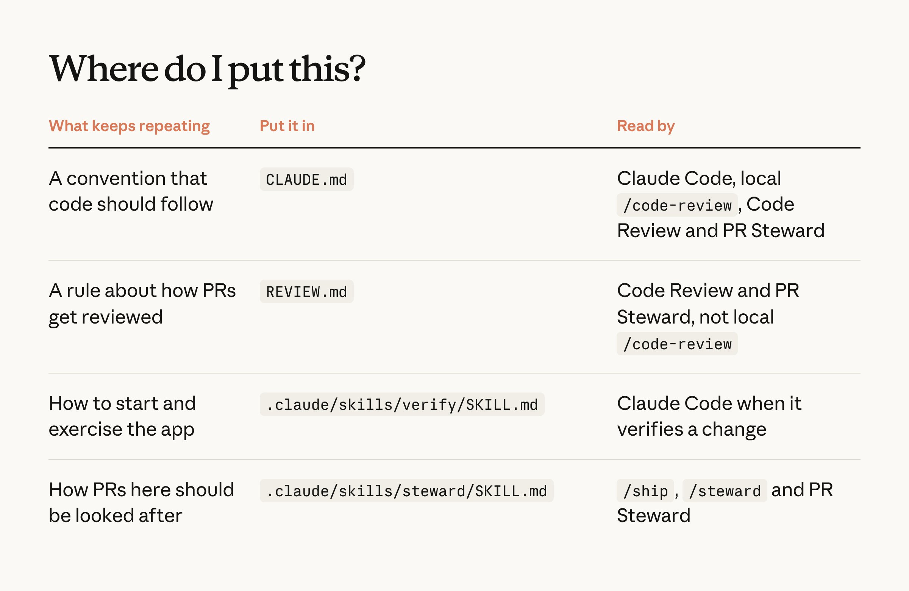
图中文字 · 中文翻译
Where do I put this? · 这段该写到哪里？
列：What keeps repeating（反复出现的东西）／Put it in（写进）／Read by（由谁读取）
/code-review、Code Review 和 PR Steward/code-review.claude/skills/verify/SKILL.md → Claude Code 在验证一次变更时读取.claude/skills/steward/SKILL.md → /ship、/steward 和 PR Steward
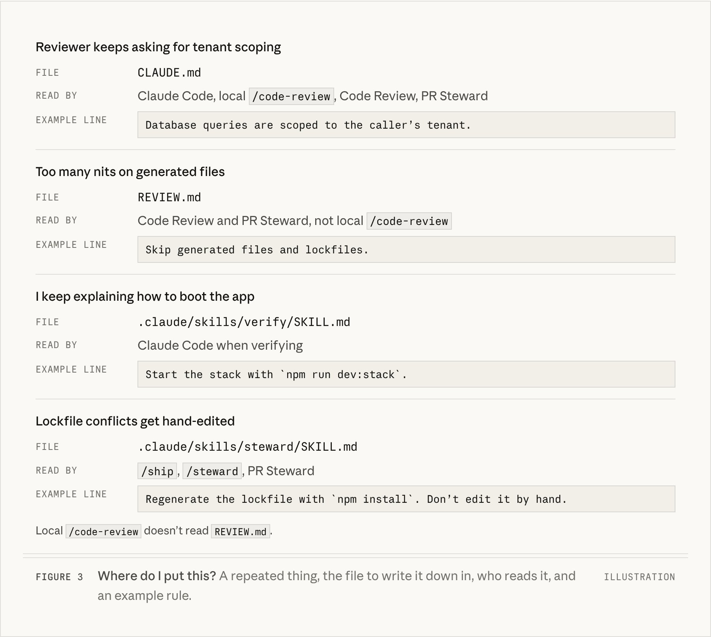
图中文字 · 中文翻译
FIGURE 3 · 这段该写到哪里？反复出现的事情、该写进的文件、谁会读它，以及一条示例规则。
文件：CLAUDE.md。读取者：Claude Code、本地
/code-review、Code Review、PR Steward。示例：Database queries are scoped to the caller's tenant.（数据库查询必须限定在调用方的租户范围内。）文件：REVIEW.md。读取者：Code Review 和 PR Steward，不包括本地
/code-review。示例：Skip generated files and lockfiles.（跳过生成文件和 lockfile。）文件：
.claude/skills/verify/SKILL.md。读取者：Claude Code 在做验证时。示例：Start the stack with npm run dev:stack。文件：
.claude/skills/steward/SKILL.md。读取者：/ship、/steward、PR Steward。示例：用 npm install 重新生成 lockfile，不要手工改。本地 /code-review 不会读取 REVIEW.md。
等你积累了几个 PR，就会开始注意到一些模式。例如：
- 同一位审查者反复提出同一条评论
- 一条 Claude 每次都得自己摸索的启动说明
- 一个不稳定的检查
你可以把这些写下来给团队看，写进不同的文件，取决于哪个工具需要读取：
图中文字 · 中文翻译
Where do I put this? · 这段该写到哪里？
列：What keeps repeating（反复出现的东西）／Put it in（写进）／Read by（由谁读取）
/code-review、Code Review 和 PR Steward/code-review.claude/skills/verify/SKILL.md → Claude Code 在验证一次变更时读取.claude/skills/steward/SKILL.md → /ship、/steward 和 PR Steward图中文字 · 中文翻译
FIGURE 3 · 这段该写到哪里？反复出现的事情、该写进的文件、谁会读它，以及一条示例规则。
文件：CLAUDE.md。读取者：Claude Code、本地
/code-review、Code Review、PR Steward。示例：Database queries are scoped to the caller's tenant.（数据库查询必须限定在调用方的租户范围内。）文件：REVIEW.md。读取者：Code Review 和 PR Steward，不包括本地
/code-review。示例：Skip generated files and lockfiles.（跳过生成文件和 lockfile。）文件：
.claude/skills/verify/SKILL.md。读取者：Claude Code 在做验证时。示例：Start the stack with npm run dev:stack。文件：
.claude/skills/steward/SKILL.md。读取者：/ship、/steward、PR Steward。示例：用 npm install 重新生成 lockfile，不要手工改。本地 /code-review 不会读取 REVIEW.md。
Repeat comments become review rules
Let's say you get asked by a peer twice to make sure a new query contains a tenant check. If you use local review, you can write this down in CLAUDE.md, since /ship uses /code-review to review. And if you have Code Review on your repository, the review-only rules can go in the root REVIEW.md:
# Review instructions
## What Important means here
Wrong results, leaked data or anything that blocks a rollback.
Style and naming are Nit at most.
## Always check
- Database queries are scoped to the caller's tenant.
- New API routes have an integration test.
## Keep it quiet
- Report at most five Nits.
- Skip generated files and lockfiles.
- Behavior claims need a file and line.Code Review won't read the REVIEW.md file from the PR being reviewed. It will also only respect some instructions, like excluding paths and limiting nits, when the default branch is protected.
Not every comment should be elevated. On our team, we have a principle that a pattern has to be repeated on at least 2 PRs to be considered for a rule. A person then approves the PR that adds the rule. That's a good bar to adopt. You should also be deleting rules as needed.
反复出现的评论，变成审查规则
假设有同事两次提醒你：新查询必须包含租户检查。如果你用的是本地审查，可以把这条写进 CLAUDE.md，因为 /ship 是通过 /code-review 来审查的。如果你的仓库启用了 Code Review，只给审查器用的规则可以放在根目录的 REVIEW.md：
# Review instructions
## What Important means here
Wrong results, leaked data or anything that blocks a rollback.
Style and naming are Nit at most.
## Always check
- Database queries are scoped to the caller's tenant.
- New API routes have an integration test.
## Keep it quiet
- Report at most five Nits.
- Skip generated files and lockfiles.
- Behavior claims need a file and line.Code Review 不会读取正在被审查的那个 PR 里的 REVIEW.md。有些指令，比如排除路径、限制 nit 的数量，也只有在默认分支受保护时才会被遵守。
不是每条评论都值得提升为规则。我们团队有一条原则：一种模式至少在 2 个 PR 上重复出现，才会被考虑写成规则。然后由一个人批准那条新增规则的 PR。这是一个值得采用的门槛。该删的规则，也应当删。
Repeat setup becomes verify skills
If you find yourself constantly telling Claude how to boot up the app and navigate to specific pages, you should just write it down. Create .claude/skills/verify/SKILL.md. This can be in the root or in the directory of the code.
---
name: verify
description: Run the web app and exercise a change end to end. Use before committing.
---1. Start the stack with npm run dev:stack.
2. Wait for /healthz on port 3000 to return 200.
3. Sign in with the seeded test account.
4. Exercise the changed flow in the browser and take a screenshot.
5. Report the steps you ran and what you saw. Don't report success without them.
Be sure to customize the commands.
Have Claude run it a few times, and fix any flaky behaviors. People ignore verification they don't trust.
反复出现的启动步骤，变成 verify skill
如果你发现自己总在告诉 Claude 怎么启动应用、怎么进到特定页面，那就直接写下来。创建 .claude/skills/verify/SKILL.md。可以放在仓库根目录，也可以放在对应代码的目录里。
---
name: verify
description: Run the web app and exercise a change end to end. Use before committing.
---1. 用 npm run dev:stack 启动整个栈。
2. 等待 3000 端口上的 /healthz 返回 200。
3. 用预置的测试账号登录。
4. 在浏览器里走一遍被改动的流程，并截图。
5. 汇报你执行了哪些步骤、看到了什么。没有这些内容，不要报告成功。
请务必把命令改成你自己的。
让 Claude 多跑几次，并修好不稳定的行为。人们不会信任自己信不过的验证。
Repeat PR maintenance becomes steward rules
This one can be easy to miss. The local watch reads the .claude/skills/steward/SKILL.md file from your working directory, whereas PR Steward, which runs in Anthropic's cloud, reads it from the default branch. Here's an example:
---
name: steward
description: House rules for looking after PRs in this repository
user-invocable: false
disable-model-invocation: true
---- Regenerate the lockfile with npm install; don't edit it by hand.
- e2e-nightly is flaky. Re-run it once before looking for a cause.
- Run npm test and npm run lint before pushing a fix.
- Leave comments about API design to the author.
In that example, the two settings at the top keep it out of the / menu and out of the skills that Claude picks on its own.
The steward file can't change the watch's restrictions. However, anyone who can merge to the repository can edit the file, so review changes to it as carefully as you would review any changes to CI.
If your team turns on PR Steward later, those guidelines will apply in Anthropic's cloud once they're on the default branch.
反复出现的 PR 维护工作，变成 steward 规则
这一项很容易被漏掉。本地值守读取的是工作目录里的 .claude/skills/steward/SKILL.md，而在 Anthropic 云端运行的 PR Steward，读取的是默认分支上的那份。下面是一个例子：
---
name: steward
description: House rules for looking after PRs in this repository
user-invocable: false
disable-model-invocation: true
---- 用 npm install 重新生成 lockfile，不要手工改。
- e2e-nightly 不稳定。先重跑一次，再去查原因。
- 推送修复之前先运行 npm test 和 npm run lint。
- 关于 API 设计的评论，留给作者处理。
在这个例子里，顶部的两个设置让它不出现在 / 菜单里，也不会被 Claude 自行挑选的 skill 选中。
steward 文件不能改变值守本身的限制。不过，任何能向仓库合并的人都可以改这个文件，所以审查对它的改动时，应当像审查对 CI 的改动一样谨慎。
如果团队稍后开启了 PR Steward，这些指引一旦进入默认分支，就会在 Anthropic 的云端生效。
Standardizing the post-PR process
Once you've run /ship on a few of your own PRs, you'll have a good sense of what Claude Ship could do across your team's PRs. The rest of this post is for when you have that conversation with your admins, so it covers what you should ask them for, and how to roll it out safely.
To get started, you'll need to ask your administrators for a single repository, a few volunteers, and a limited amount of time to test Claude Ship on your own pull requests.
- Agree on your budget constraints ahead of time.
- Protect the default branch of the repository. A repository admin can set up this requirement, ensuring that any updates require a PR with an approval on the latest push, and that the Claude GitHub App is not on the bypass list.
- Enable Code Review for this repository. An Owner, the admin role in your Claude organization, can enable Code Review.
- Enable PR Steward in Manual mode. The same Owner can enable PR Steward to kick in when a user with write access comments @claude steward, or when authors opt in for it to kick in automatically. Comment @claude stop to stop Steward.
- Create an observe mode approval policy. This file acts like any other file; you can create it in your own PR, but since merging this file enables Approvals for the repository, clear it with an Owner first.
PR Steward is designed not to approve or merge pull requests, so make sure you use branch protection to require the approvals you want before merging.
PR Steward reads the comments from reviewers and performs some actions based on them. Like any text-parsing agent, it can be fooled by what people say. Make sure you use it only in repositories with trusted collaborators, and check the changes made by PR Steward on comments from untrusted users.
把 PR 提交之后的流程标准化
等你在自己的几个 PR 上跑过 /ship，就会比较清楚 Claude Ship 能在团队的 PR 上做些什么。文章接下来的部分，是为你去和管理员谈这件事时准备的：该向他们要求什么，以及如何安全地推广。
要开始，你需要向管理员申请：一个仓库、几位志愿者，以及一段有限的时间，用来在你自己的 PR 上测试 Claude Ship。
- 事先就预算约束达成一致。
- 保护该仓库的默认分支。 仓库管理员可以设置这项要求，确保任何更新都需要带有“对最新推送的批准”的 PR，并且 Claude GitHub App 不在绕过名单上。
- 为这个仓库启用 Code Review。 Owner（你所在 Claude 组织中的管理员角色）可以启用 Code Review。
- 以 Manual 模式启用 PR Steward。 同一位 Owner 可以启用 PR Steward，让具有写权限的用户评论 @claude steward 时启动，或让作者选择自动启动。评论 @claude stop 可以停止 Steward。
- 创建一份 observe 模式的批准政策。 这个文件和其他文件一样，你可以在自己的 PR 里创建；但合并它会为仓库启用 Approvals，所以先和 Owner 确认清楚。
PR Steward 被设计成不批准、不合并 PR，所以请务必用分支保护来要求你希望在合并前获得的那些批准。
PR Steward 会阅读审查者的评论，并据此执行一些操作。和任何解析文本的 agent 一样，它可能被人们写下的内容误导。请只在协作者可信的仓库里使用它，并对来自不可信用户的评论所引发的、由 PR Steward 做出的变更加以检查。
Configure your first approval policy
For approval policies, Claude Approvals reads from the .claude/approvals.yml file on the default branch. A simple first policy could be:
# .claude/approvals.yml
version: 1
mode: observe
rules:
- purpose: "A change takes two people."
paths: ["**"]
verdict: { claude: comments, seats: 2 }
advisory: [claude/code_review]
- purpose: "A change to the review rules takes two people."
paths: ["**/.claude/**", "**/REVIEW.md", "**/CLAUDE.md", "**/CODEOWNERS", ".github/**"]
nested: inherit
verdict: { claude: comments, seats: 2 }seats is the number of people who have to approve, and the author can take one of those seats.
There's one catch here, which is that after the watch has merged the base branch, the most recent commit will be a merge commit, and nobody sits in the author's seat for it. So the PR author should comment @claude approve.
When a rule's verdict is claude: comments, Claude won't approve. If more than one rule matches, the strictest one wins. In observe mode, the check will print the outcome but not approve.
Make sure to keep the advisory line. Once the policy file is on the default branch, Code Review will only start automatically on PRs that match a rule that names it, so without that line your automatic reviews stop. Advisory reviews don't affect the verdict, and they run according to your existing settings. A policy that names Code Review can start billed reviews, even where Code Review is turned off.
To see where a passing Claude review could lower what a path needs, you can swap the advisory line for an override and update the rule's purpose to match (for example, "When Claude's review passes, one is enough and Claude approves.").
override:
- { if: "claude/code_review = pass", verdict: { claude: approves, seats: 1 } }Because the override also names Code Review, automatic review will still be triggered for those pull requests. When the review passes, the override takes the rule's decision and replaces it with one seat plus Claude's approval. The author can fill that one seat, so the check can now report that Claude would have approved. But text in a pull request can sway Claude's review, and when it does, this override lowers what that pull request needs.
If there are some paths that need to always require a human, put them in a rule without an override (next section, step 1). Tell the budget owner before you merge this, as a policy configured like this will start billed Code Reviews, even in observe mode, whenever you push, regardless of your Code Review settings.
You can also build your own classifiers for questions like "is this PR related to a migration?" Custom classifiers live in .claude/classifiers/<name>/def.yml on the default branch, and each run is billed, even in observe mode. Start out by focusing on paths and the Code Review result.
配置你的第一份批准政策
对于批准政策，Claude Approvals 读取的是默认分支上的 .claude/approvals.yml。一份简单的初始政策可以是：
# .claude/approvals.yml
version: 1
mode: observe
rules:
- purpose: "A change takes two people."
paths: ["**"]
verdict: { claude: comments, seats: 2 }
advisory: [claude/code_review]
- purpose: "A change to the review rules takes two people."
paths: ["**/.claude/**", "**/REVIEW.md", "**/CLAUDE.md", "**/CODEOWNERS", ".github/**"]
nested: inherit
verdict: { claude: comments, seats: 2 }seats 是必须批准的人数，作者可以占用其中一个席位。
这里有一个例外：值守把基线分支合并进来之后，最新的 commit 会是一个 merge commit，作者席位上没有人。所以 PR 作者应当评论 @claude approve。
当一条规则的 verdict 是 claude: comments 时，Claude 不会批准。如果多条规则同时匹配，以最严格的那条为准。在 observe 模式下，检查会打印结果，但不会批准。
请务必保留 advisory 那一行。政策文件进入默认分支之后，Code Review 只会在匹配到点名它的规则的 PR 上自动启动；没有这一行，你的自动审查就会停掉。advisory 审查不影响 verdict，运行方式仍按你现有的设置。一份点名了 Code Review 的政策可以启动计费审查，即使该仓库已关闭 Code Review。
如果想看看“Claude 审查通过时，某条路径的要求可以放宽到什么程度”，可以把 advisory 行换成 override，并同步修改该规则的 purpose（例如："When Claude's review passes, one is enough and Claude approves."）。
override:
- { if: "claude/code_review = pass", verdict: { claude: approves, seats: 1 } }因为这条 override 也点名了 Code Review，那些 PR 仍会触发自动审查。审查通过时，override 会拿走该规则原来的决定，替换成一个席位加上 Claude 的批准。作者可以填那个席位，于是检查现在可以报告：Claude 本可以批准。但 PR 里的文字可能影响 Claude 的审查；一旦发生这种情况，这条 override 就会降低该 PR 所需的门槛。
如果有些路径必须始终需要一个人，把它们写进一条没有 override 的规则（下一节，第 1 步）。合并之前先告知预算负责人，因为这样配置的政策会启动计费的 Code Review，即使处于 observe 模式，每次推送都会发生，而不论你的 Code Review 设置如何。
你也可以为自己的问题构建 classifier，比如“这个 PR 是否与一次迁移有关？”。自定义 classifier 放在默认分支的 .claude/classifiers/<name>/def.yml，每次运行都会计费，即使在 observe 模式下也是如此。一开始请先关注路径和 Code Review 的结果。
Monitoring and transitioning to enforcement
Our team uses the same process as observe mode for our own internal commit gate. It logs the decisions it would have made in observe mode, so we can analyze false positives before making them mandatory. You will see the decisions in the Claude Approvals check and the associated comment.
Keep in mind that you only get the value of observe mode if you actually monitor it. After a week or two of having it in place, revisit the merged PRs and see how the decisions compare to your reviewers' behavior.
The first two rows apply once you've added the override.

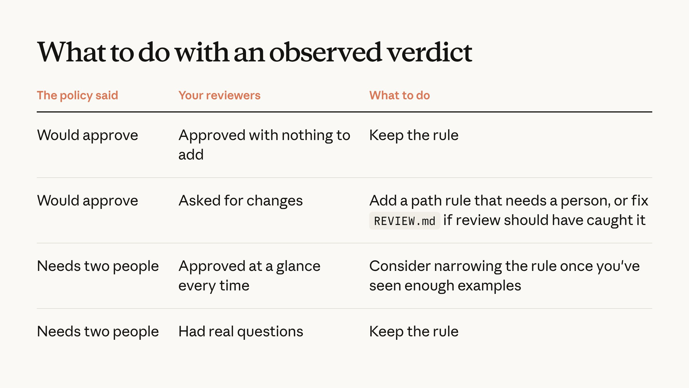
图中文字 · 中文翻译
What to do with an observed verdict · 看到一条观察中的裁决后该怎么办
列：The policy said（政策怎么说）／Your reviewers（审查者怎么做）／What to do（该怎么做）

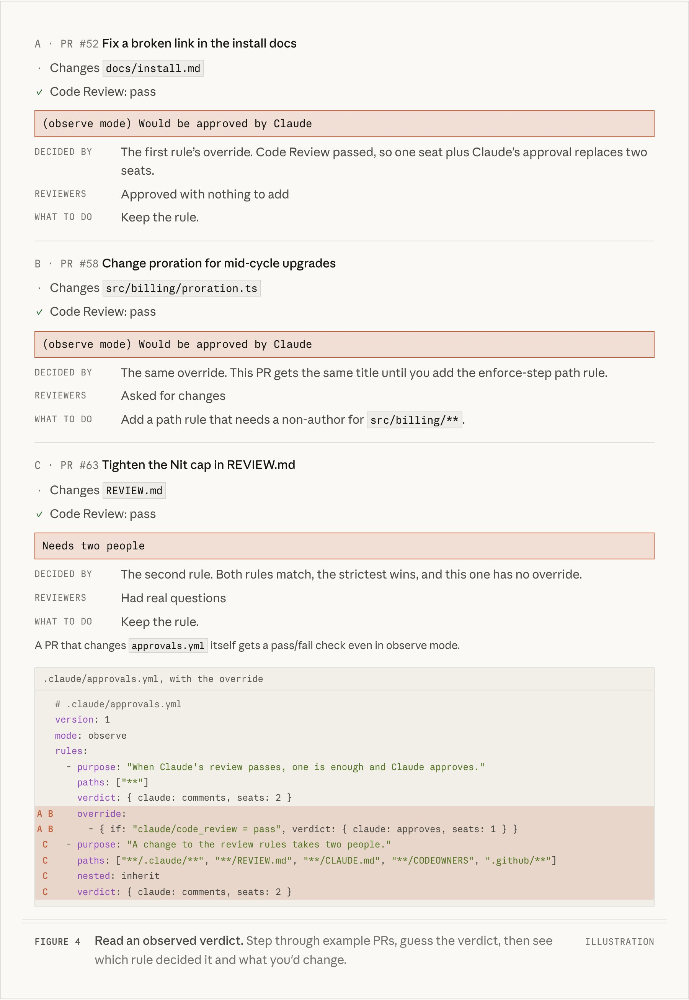
图中文字 · 中文翻译
FIGURE 4 · 阅读一条观察中的裁决。先走几个示例 PR，猜测裁决，再看是哪条规则决定的、你会改什么。
改动
docs/install.md。Code Review：通过。（observe mode）Would be approved by Claude（观察模式：本会被 Claude 批准）。由第一条规则的 override 决定：Code Review 通过后，一个席位加上 Claude 的批准，替换原来的两个席位。审查者批准且没有补充。该做的事：保留这条规则。改动
src/billing/proration.ts。Code Review：通过。同样会被 Claude 批准，依据同一条 override。在你加上强制执行步骤中的路径规则之前，这个 PR 会得到同样的裁决。审查者要求修改。该做的事：为 src/billing/** 增加一条需要非作者参与的路径规则。改动 REVIEW.md。Code Review：通过。Needs two people（需要两个人）。由第二条规则决定：两条规则都匹配，最严格的那条获胜，且这一条没有 override。审查者提出了真正的问题。该做的事：保留这条规则。
改动 approvals.yml 本身的 PR，即使在 observe 模式下也会得到通过/失败检查。图下部是带 override 的政策文件，并用 A/B/C 标出了各示例命中的行。
Go through a few example PRs. How would you have decided? Which rule made the decision? What would you change? Pay the most attention to the second row, and fix those before you relax any rules.
One thing to know before you enforce: Claude's approvals count as real approvals on GitHub. If a ruleset only needs one approval, Claude's can be enough on its own. So read your policy and your branch rules together.
If you use auto-merge, and have policies that only the author can fulfill (like the override above), you can have PRs that get merged without anyone doing anything. Decide explicitly whether that's OK for each path, and write it down.
Then lock it down in this order:
- Use a rule without an
ifor override for paths where you always need a second set of eyes. No classifier result can override it, andnested: inheritcarries it into subdirectories that have their own policies.
- purpose: "Auth, billing and CI take a person who isn't an author."
paths: ["src/auth/**", "src/billing/**", ".github/**"]
nested: inherit
verdict:
claude: comments
seats: [{ count: 1, from: [humans, "!pr/authors"] }]- Remove
mode: observeand merge. Now Claude can approve wherever the rules say it approves. - About five minutes later, comment @claude approvals rerun on open PRs, so any stale results get cleaned up. Reruns can charge for classifiers again.
- Ask a repository admin to make the Claude Approvals check required, and to pick the Claude app as its source. Until then, your PR can get merged regardless of what the check says.
Claude Ship and the local commands use AI, and they can miss bugs, security problems, and other issues, so keep all your existing tests, scanners, and reviewers.
监控，并过渡到强制执行
我们团队把自己的内部提交门禁，也按 observe 模式同一套流程来用。它会记录自己在 observe 模式下本会做出的决定，这样我们能在强制执行之前分析误报。你会在 Claude Approvals 检查及其相关评论里看到这些决定。
请记住，observe 模式只有在你真正去监控时才有价值。上线一两周后，回看已合并的 PR，比较这些决定和审查者的实际行为。
前两行在你加入 override 之后才会适用。
图中文字 · 中文翻译
What to do with an observed verdict · 看到一条观察中的裁决后该怎么办
列：The policy said（政策怎么说）／Your reviewers（审查者怎么做）／What to do（该怎么做）
图中文字 · 中文翻译
FIGURE 4 · 阅读一条观察中的裁决。先走几个示例 PR，猜测裁决，再看是哪条规则决定的、你会改什么。
改动
docs/install.md。Code Review：通过。（observe mode）Would be approved by Claude（观察模式：本会被 Claude 批准）。由第一条规则的 override 决定：Code Review 通过后，一个席位加上 Claude 的批准，替换原来的两个席位。审查者批准且没有补充。该做的事：保留这条规则。改动
src/billing/proration.ts。Code Review：通过。同样会被 Claude 批准，依据同一条 override。在你加上强制执行步骤中的路径规则之前，这个 PR 会得到同样的裁决。审查者要求修改。该做的事：为 src/billing/** 增加一条需要非作者参与的路径规则。改动 REVIEW.md。Code Review：通过。Needs two people（需要两个人）。由第二条规则决定：两条规则都匹配，最严格的那条获胜，且这一条没有 override。审查者提出了真正的问题。该做的事：保留这条规则。
改动 approvals.yml 本身的 PR，即使在 observe 模式下也会得到通过/失败检查。图下部是带 override 的政策文件，并用 A/B/C 标出了各示例命中的行。
挑几个示例 PR 走一遍。你会怎么决定？是哪条规则做出的决定？你会改什么？请把最多注意力放在第二行，先修好那些，再放松任何规则。
强制执行之前要知道的一点：Claude 的批准在 GitHub 上算作真正的批准。如果一套规则只需要一次批准，Claude 的批准单独就可能够用。所以请把你的政策和分支规则放在一起读。
如果你使用 auto-merge，同时又有只有作者才能满足的政策（比如上面的 override），就可能出现没有任何人做任何事、PR 却被合并了的情况。请对每条路径明确决定这是否可以接受，并写下来。
然后按这个顺序锁紧：
- 对那些你始终需要第二双眼睛的路径，使用一条不含
if或 override 的规则。任何 classifier 的结果都不能覆盖它，nested: inherit会把它带进拥有自己政策的子目录。
- purpose: "Auth, billing and CI take a person who isn't an author."
paths: ["src/auth/**", "src/billing/**", ".github/**"]
nested: inherit
verdict:
claude: comments
seats: [{ count: 1, from: [humans, "!pr/authors"] }]- 去掉
mode: observe并合并。此后，在规则写明 Claude 可以批准的地方，Claude 就可以批准。 - 大约五分钟后，在仍打开的 PR 上评论 @claude approvals rerun，清掉过时的结果。重新运行可能再次为 classifier 计费。
- 请仓库管理员把 Claude Approvals 检查设为必需，并选择 Claude app 作为其来源。在此之前，无论检查结果如何，你的 PR 都可能被合并。
Claude Ship 和这些本地命令都使用 AI，它们可能漏掉 bug、安全问题和其他缺陷，所以请保留你现有的全部测试、扫描器和审查者。
I'd like to make it clear that for the Claude Code team, the person who called the agent is responsible for a change. It's as if they typed it themselves.
Your team should still be responsible for the PR scope, design, evidence, and rules for when it can merge. With these principles in mind, here is where you can get started:
- Today: Run /code-review on your current branch. Make a note of what it got wrong and what it missed.
- Next PR: In a repository where you trust everyone who can merge, try /ship, and stick around. Try /steward on an existing PR, in a different terminal and git checkout.
- By Friday: Create a small PR with the rule you repeated most, in your CLAUDE.md, REVIEW.md, or a skill. Do the commit yourself, since /ship will not commit rule files. Share the PR and the example observe-mode policy with your team.
If you do so, I would love to know which rule file was most impactful, and which tasks you chose to keep doing yourself.

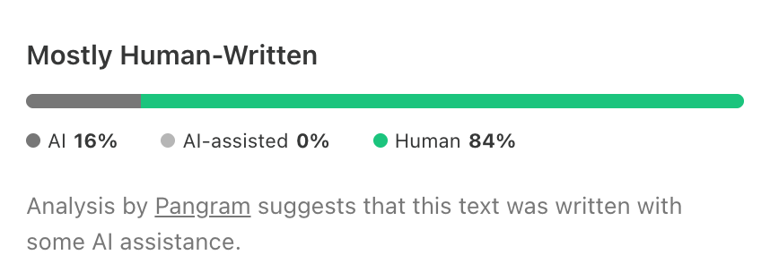
图中文字 · 中文翻译
Pangram 的检测结果
AI 16%，AI-assisted 0%，Human 84%。
Analysis by Pangram suggests that this text was written with some AI assistance.（Pangram 的分析显示，这篇文章在写作中有一定的 AI 协助。）
我想说清楚：在 Claude Code 团队，调用 agent 的那个人，要对这次变更负责。就好像这些字是他们自己打出来的。
你们团队仍然要对 PR 的范围、设计、证据，以及何时可以合并的规则负责。本着这些原则，你可以从这里开始：
- 今天： 在当前分支上运行
/code-review。记下它哪里弄错了、哪里漏掉了。 - 下一次 PR： 在一个你信任每个能合并的人的仓库里，试一次
/ship，并留在旁边。再在另一个终端和 git checkout 里，对一个已有的 PR 试/steward。 - 周五之前： 针对你重复得最多的那条规则，写一个小 PR，放进 CLAUDE.md、REVIEW.md 或一个 skill。这次 commit 请自己做，因为
/ship不会提交规则文件。把这个 PR，以及那份 observe 模式政策示例，分享给团队。
如果你这样做了，我很想知道哪份规则文件最有用，以及哪些事情你选择继续自己做。
图中文字 · 中文翻译
Pangram 的检测结果
AI 16%，AI-assisted 0%，Human 84%。
Analysis by Pangram suggests that this text was written with some AI assistance.（Pangram 的分析显示，这篇文章在写作中有一定的 AI 协助。）
评论
评论由 GitHub Discussions 提供。